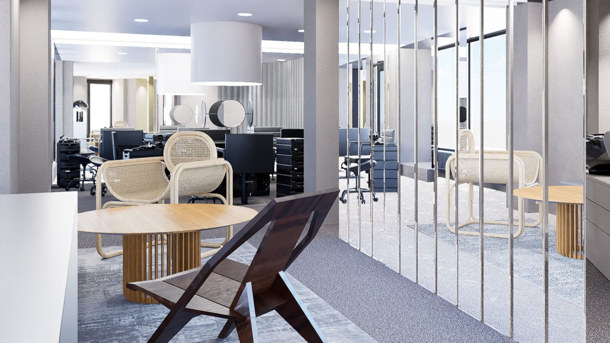

Kein Neukunden-Druck. Der Salon ist etabliert und exklusiv.
Ziel ist Markenaufbau. Die exklusive Ausstrahlung stärken.
Anspruch: Prominente & kreative Köpfe anziehen.
Kanäle: TikTok & Instagram — kompletter Relaunch.
Für eine exklusive Marke ist Social Media kein Verkaufs-, sondern ein Signal-Kanal.
Der Name EVEN ist das Konzept: das Gleichgewicht zwischen wer du bist und wer du sein willst. Genau das leistet der Salon — Wunsch und Persönlichkeit in Einklang.
Menschen, die Geschmack über Trend stellen.
Empfehlung: „Du“ — aber mit Substanz. Nähe ohne Klasseverlust; Exklusivität kommt aus Inhalt & Ästhetik.

Leitstern: Lieber 4.000 richtige Follower als 40.000 beliebige. Qualität schlägt Reichweite.